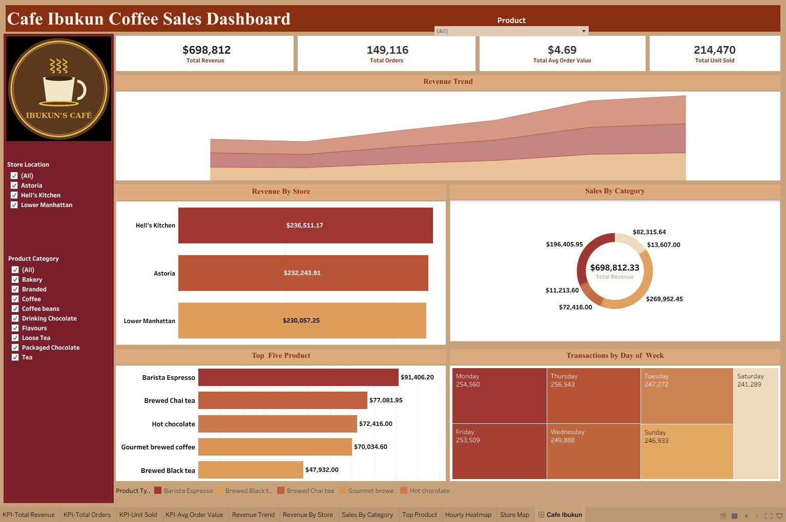

Café Ibukun: coffee shop sales dashboard
Tableau Public · Excel
An interactive Tableau dashboard and written report on six months of sales across three New York City coffee shops. It shows which stores, products and days drive revenue, and where the business is leaving money on the table.

Open the live dashboard Read the full report (PDF)
Read the case study
- Business question
- What is driving sales across the three stores, and where is the business missing opportunities?
- Data
- A public coffee shop sales dataset covering 149,116 transactions across three NYC locations (Astoria, Hell’s Kitchen and Lower Manhattan), January to June 2023.
- Process
- Prepared the data with helper columns in Excel, then built a branded Tableau dashboard with KPI cards (revenue, orders, average order value, units sold), a revenue trend, revenue by store, sales by category, top five products and a day-of-week view. Filters let users explore by store, category and product.
- Key insights
- Monthly sales roughly doubled, from $82K in January to $166K in June.
- Most customers buy between 8 and 10 in the morning, and sales drop sharply after 6pm, which points to a commuter crowd.
- Coffee and tea carry the business. Bakery items barely move. Barista Espresso, Brewed Chai Tea and Gourmet Coffee are the top sellers.
- Hell’s Kitchen earns the most revenue, with Lower Manhattan close behind.
- Saturday has the fewest transactions of any day.
- Root cause
- A 5 Whys analysis of the Saturday dip showed the problem is not that weekends are naturally quiet. The shop plans and staffs Saturday exactly like a weekday, so nothing gives weekend visitors a reason to come in.
- Recommendations
- Run a Saturday promotion or feature item to create a weekend reason to visit.
- Plan staffing and prep around the 8 to 10am rush.
- Test an after-6pm deal to win back the evening slot.
- Bundle bakery with coffee or tea instead of selling it alone.
- Study what Hell’s Kitchen does differently and try it at Lower Manhattan.
- Links
- Live Tableau dashboard · Full report (PDF)